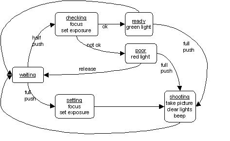

What is "white box testing"?
White box tests are based on the design of the component to be tested.
Define "Legacy Software", and explain why it is difficult to maintain.
Legacy software is software that is old, but is still used for critical business functions, and that the customers don't want to replace (for fear of disrupting their business).
It is hard to maintain because it has far-outlived its design, is technologically obsolete, increasingly hard to add new features to, and the original designers are long gone.
Create a UML diagram for the interaction between a user and digital camera, where a half-press checks focus/exposure (confirmed w/lights), and a full press takes a picture (confirmed w/beep).

Consider the version and change control needs of two different environments, and suggest an appropriate source tree strategy and version/change control discipline for each.
(a) a new (not yet delivered) ten person project, where each component has a single primary engineer.
(b) a three hundred person engineering department, supporting dozens of projects on a large source-base for a mature product that does weekly builds. A particular component may or may not have a primary engineer, but many people might have occasional need to change that component (for bug fixes, or to add features for their own projects).
The next three questions are general, and do not refer specifically to the above situations.
(c) discuss the respective advantages of blocking and warning when someone attempts to check out a module that someone else is already working on.
(d) why would a change control system need to know what version someone started with when they attempt to check-in a change.
(e) suggest two different and reasonable ways of dealing with the problem in part (d).
(a) ten person new project
People can safely make all of their changes to the live sources, because nobody else should be making conflicting changes or be adversely affected by their work-in progress.
(b)300 person stable product
In this situation there should be a master source tree, and only completely tested projects ready to integrate back should be checked in to it. Work in progress should be done in a local copy of that source tree, and the many changes made in that working tree should be put back into the master tree as a single huge transaction when the project is ready to integrate.
(c) block vs warn
Blocking a second person from checking out a source for change is an effective way to prevent conflicting check-ins ... but it precludes coordination as described below. Warnings allow people to continue and manage the conflict in their own way ... but it leaves open the possibility of a failed put-back later.
(d) knowing starting version
Knowing what version someone started with enables the change control mechanism to detect check-ins that may have been invalidated by intervening changes made by other users between the time of check-out and check-in.
It also enables the version control mechanism to figure out exactly what changes you made (by comparing it with your starting point).
(e) conflicting check-ins
We could try to preempt the conflict, by noticing someone else was already working on the module and talking to them about how to coordinate our changes.
Alternatively, the second person to put-back could re-check out the updated version and re-make their changes to the current version.